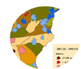
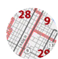

Papers and Presentations, in Delaware, Connecticut, and at the Census Bureau,
researched as an individual or within a team structure.

Employment
- Net New Jobs: States and Metro areas
Firm Size Employment Dynamics, 2001 to 2013 with Census' QWI Explorer, to
Census' Longitudinal Employer Household Dynamics (LEHD) annual conference, 2015 June

Economic and Housing Analysis
Jill Coghlan
Also registered at: https://ideas.repec.org/f/pco631.html